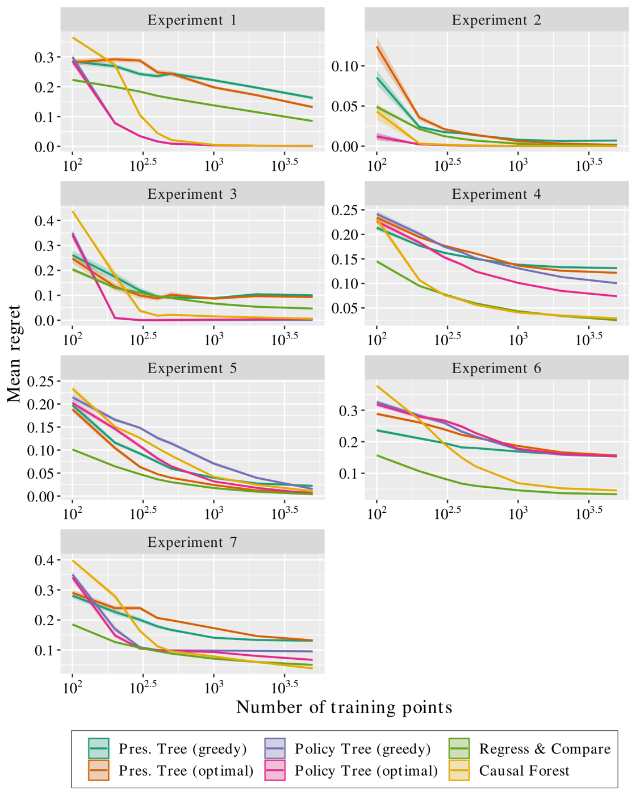
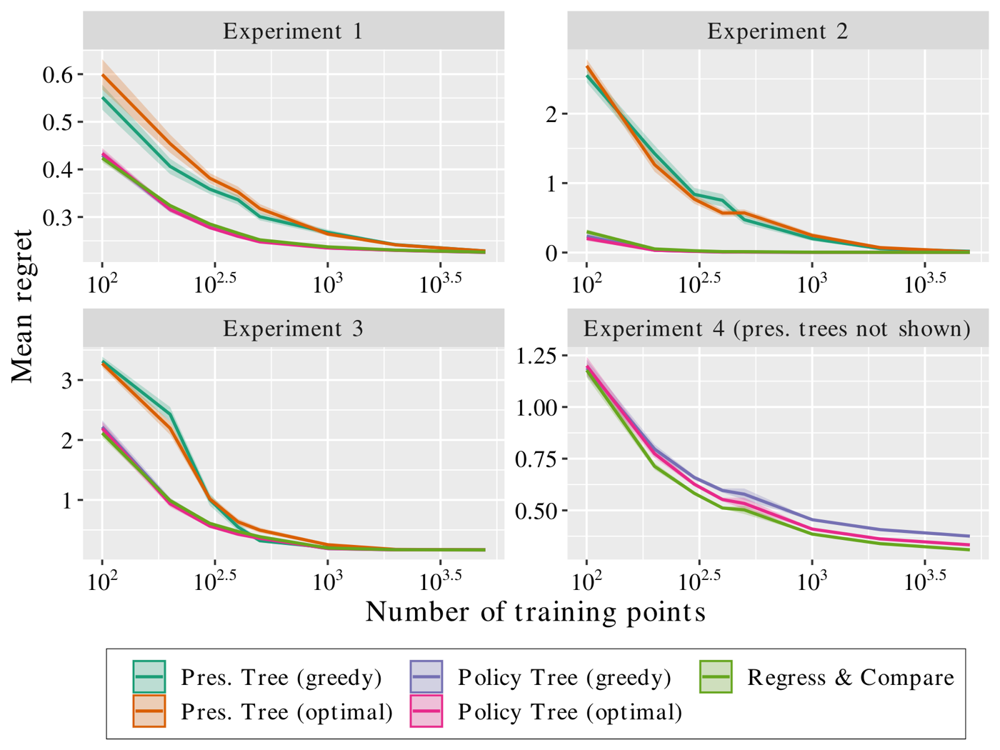
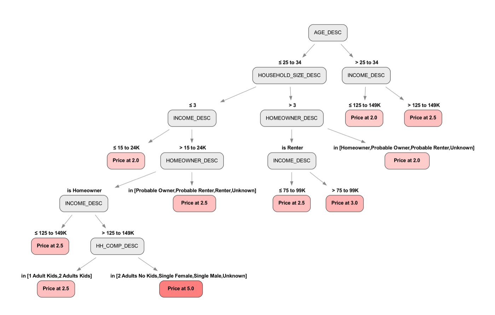
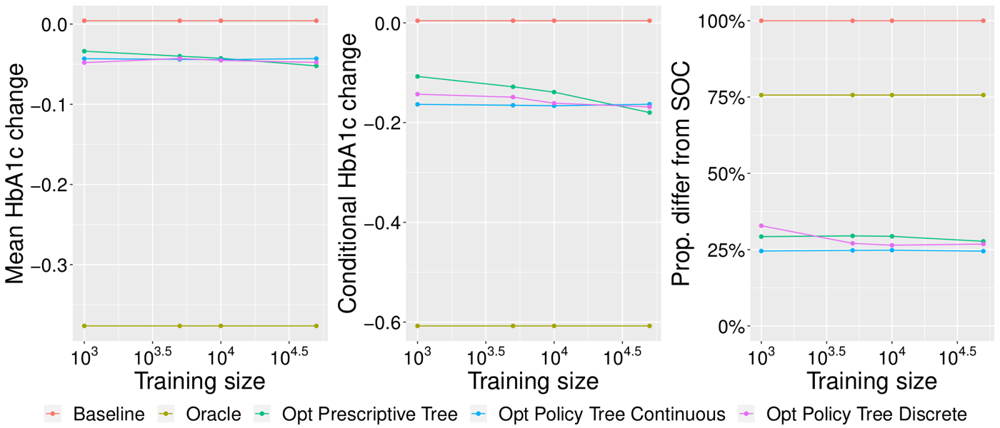
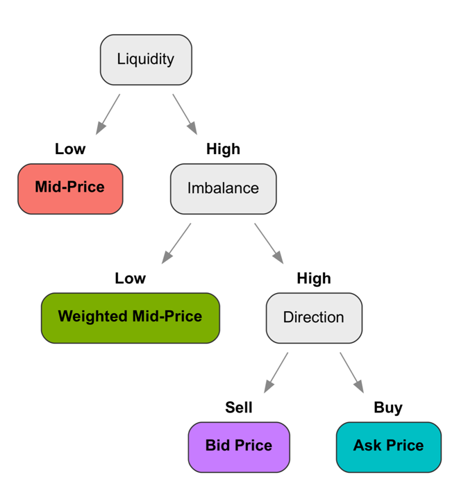

- 推定と学習を分ける全員・全処置の報酬の行列 \(\Gamma\) を先に推定する。木はその合計を最小にする方策だけを学ぶので、結果を推定するモデルは木に埋め込める形に限られない。
- 77.1% 対 65.9%イチゴの価格設定で推定した収益の増加は、最適な方策木が 77.1%、同じ報酬の推定値で学習した貪欲な方策木が 65.9%、Optimal Prescriptive Trees が 61.5% だった（論文 Table 7、arXiv v1）。
- 1,000 件で 50,000 件並み糖尿病の治療では、連続用量の方策木が学習データ 1,000 件で、Optimal Prescriptive Trees の 50,000 件と同等の性能を示した。木の葉は 10 個で、OPT の最良の木は 21 個だった。
処方的な木は結果の推定を木の中で行うので、推定できる結果の形が限られ、木も読みにくくなる
観察データ \(\{(\mathbf x_i, y_i, z_i)\}_{i=1}^n\) では、特徴量 \(\mathbf x_i\) をもつ人に処置 \(z_i\) を施した結果 \(y_i\) だけが観測される。ほかの処置を施していたらどうなったか（反実仮想の結果）は観測されない。処置は \(m\) 個の選択肢から1つを選ぶ場合も、1つ以上の処置の用量 \(z_i\in\mathbb R^m\) を決める場合もある。目標は、\(\mathbf x\) を見て結果が最もよくなる処置を割り当てる方策を作ることである。
決定木は人が判断の筋道を確かめられるので、この問題に向いている。論文は、処方は直接の、ときに重大な影響を伴う行動を勧めるので、予測よりも解釈しやすさが重要だろうと述べている。これまでの木の方法には2つの系統があった。
- 反実仮想の推定を木に埋め込む方法：Kallus の personalization trees（Kallus 2017）や Optimal Prescriptive Trees（OPT）は、反実仮想の推定と方策の学習を1回で行う。結果のモデルは木に埋め込める形（OPT では区分的に定数か線形）に限られる。分岐が推定の改善にも使われるので、どの分岐が方策のためのものか分かりにくい。処置の数が多いと、葉ごとに各処置の結果を推定するデータが足りなくなる。
- 推定と学習を分け、木を貪欲に学ぶ方法：Zhou らは二重頑健な推定値から、Biggs らは黒箱モデルの予測値から方策の木を学ぶ。どちらも木を貪欲法で学ぶので、方策が最適にならず、木も大きくなりやすいと論文は指摘する。Zhou らは全探索による最適な木も試しているが、規模を大きくできない。
論文は後者の「推定と学習を分ける」考え方に、大域的な最適を目指して木を学ぶ Optimal Trees の枠組み（OCT から始まる）を組み合わせる。
全員・全処置の報酬が分かれば、方策の木の学習は葉ごとに合計が最小の処置を選ぶ問題になる
観測 \(i\) に処置 \(t\) を施したときの結果 \(\Gamma_{it}\) がすべて分かっているとする（小さいほどよいとする）。特徴量だけを見て処置を決める方策 \(\tau(\cdot)\) のうち、次を最小にするものを求める。
方策を木で表し、\(\mathbf x\) が入る葉を \(v(\mathbf x)\)、葉 \(\ell\) で割り当てる処置を \(z_\ell\) とする。目的関数は葉ごとに分かれるので、木の構造 \(v\) を決めれば、各葉の処置は
で決まる。処置の候補を並べて合計を比べるだけでよい。残る問題は木の構造の選び方である。
図1 分岐を1つだけもつ木での、葉の処置の決まり方（解説者による模式図）。10 人の報酬（小さいほどよい）は解説者が置いた例で、論文の数値ではない。\(s=0\) と \(s=10\) は分岐なし（全員に同じ処置）を表す。各葉では列の合計が小さい処置を選ぶ。この例では \(s=6\) で合計が最小の 24 になる。
報酬は処置の種類に応じて二重頑健な推定か回帰モデルで先に埋め、全部分かっていればそのまま使う
観察データでは \(\Gamma_{it}\) は実際に施した処置の分しか分からないので、残りを推定する。推定の方法は処置の種類で変わる。
- 離散の処置：Dudík らの二重頑健な推定を、Zhou らや Athey と Wager の手順に従って使う。まず多クラス分類モデル（ランダムフォレストやブースティング）で傾向スコア \(\hat p_{it}\) を推定する。過学習を避けるため、各分割の確率は残りのデータで学習したモデルで出す（k 分割交差）。次に処置ごとに回帰モデルを学習し、全員・全処置の結果 \(\hat y_{it}\) を予測する。最後に2つを合わせる。
\[ \Gamma_{it}=\frac{y_i-\hat y_{it}}{\hat p_{it}}\cdot\mathbb 1\{z_i=t\}+\hat y_{it} \]この推定値で方策の価値を測ると、傾向スコアと結果のどちらか一方のモデルが正確なら、価値の推定は正確になる。
- 連続の用量：各処置の用量 \(T_{it}\) を特徴量に加えて、結果を予測する回帰モデル（ランダムフォレストやブースティング）を1つ学習する。用量の範囲を候補に離散化し、各候補での結果を予測して報酬とする。木はどの候補の用量がよいかを学ぶ。結果が二値なら分類モデルの確率を使えばよい。
- 報酬がすべて分かる場合：金融商品の価格設定の例（後述）のように、どの選択肢でも結果を計算できるなら推定は要らない。
\(\Gamma_{it}\) が観測した処置 \(z_i\) だけで決まる特殊な場合は、損失行列 \(L_{jk}\) で重みをつけた分類問題になる。対角が 0、それ以外が 1 なら通常の多クラス分類と同じである。
木の構造は Optimal Trees の座標降下で大域的な最適を目指して探し、葉の処置はそのつど列挙で決める
木の構造 \(v(\mathbf x)\) の最適化には、Bertsimas と Dunn の Optimal Trees の枠組みを使う。この枠組みは木の割り当て \(v(\mathbf x)\) だけに依存する任意の目的関数を座標降下で最適化する。座標降下の各段階で、今の木の構造から各葉の処置 \(z_\ell\) を上の式で決め、それを目的関数に戻して値を求め、探索の向きを決める。アルゴリズムの詳細は Bertsimas と Dunn の本の 8.3 節にある。
過学習を防ぐハイパーパラメータは、最大の深さ \(D_{\max}\)、学習データへの当てはまりと木の複雑さの釣り合いを決める複雑さの係数 \(\alpha\)、葉ごとの最小の標本数 \(n_{\min}\) の3つである。このうち \(D_{\max}\) と \(\alpha\) が特に重要で、同じ本の 8.4 節の調整方法で決める。
同じ問題を木で解く Biggs らや Zhou らは、木を貪欲法で学習していた。分類や回帰では大域的な最適を目指して学習した木のほうが性能と解釈しやすさで有利だったので、方策の問題でも同じことが言えるかを実験で確かめる、というのが論文の立場である。
合成データでは、方策木の後悔は効果の関数の複雑さで決まり、基準の結果の形には左右されなかった
特徴量は 10 次元で、奇数番目は標準正規分布、偶数番目は Bernoulli(0.5) から生成する。二値の処置の実験では、基準の関数と効果の関数を組み合わせて \(y_0=\text{baseline}-\tfrac12\text{effect}\)、\(y_1=\text{baseline}+\tfrac12\text{effect}\) とし（小さいほどよい）、結果のよいほうの処置が割り当てられやすい偏った割り付けで観察研究をまねる。学習データは 100〜5,000 件、テストは 60,000 件で、処置ごとの真の結果からテストでの平均の後悔（割り当てた処置と最適な処置の結果の差）を測り、100 回の平均をとった。
比べたのは、貪欲・最適な処方的な木（\(\mu=0.5\)）、最適な方策木と貪欲な方策木（報酬はランダムフォレストの傾向スコアと causal forest の結果を使う二重頑健な推定）、ランダムフォレストによる regress-and-compare（R&C）、causal forest である。木はどれも深さ 5 まで、深さと \(\alpha\) は検証データで選んだ。

効果を木で表せる実験 1〜3（1・2 は分岐1回で済む）では、方策木はすぐに後悔がほぼ 0 になった。処方的な木と R&C は基準の関数も学ぶ必要があり、基準が線形の実験 1 や二次の実験 3 では改善が遅かった。基準も効果も線形の実験 4 では方策木の収束は遅くなったが、最適な方策木は貪欲な方策木よりはっきりよかった。この実験では R&C と causal forest がより速く学んだ。基準の関数がない実験 5 では処方的な木と方策木が同じ問題を解くことになり、最適な処方的な木のほうがわずかに速く収束した。効果が二次の実験 6 では、木の方法はどれも同じ 0 でない後悔に落ち着き、R&C と causal forest がずっと低かった。
処置が3つの実験（2つ）、連続の用量 1 つの実験（4つ、用量 \([-4,4]\) を 10 個の候補に離散化）、連続の用量 2 つの実験（2つ、6×6＝36 通り）でも同じ傾向だった。連続の用量では、報酬は XGBoost で特徴量と用量から結果を予測して作る。処方的な木は観測した用量を最も近い候補に丸めて学ぶので、データが候補ごとに薄まる。連続の用量 1 つの実験 4 で処方的な木の後悔は 2〜5、用量 2 つの実験 2 では 8〜10 で、図から外されている。

論文のまとめでは、離散の処置での方策木の性能は処置効果の複雑さだけに関係し、処方的な木の性能は結果の関数全体の複雑さに左右された。連続の用量では、方策木は用量の候補の数によらず効率よく学び、処方的な木はデータが用量の候補に薄く分かれると性能が落ちた。最適な方策木は R&C とおおむね同等で、学ぶべき関数が単純でないときは貪欲な方策木を上回った。
イチゴの価格設定では、推定した収益の増加が 77.1% で、貪欲な方策木の 65.9% と OPT の 61.5% を上回った
分析会社 Dunnhumby が公開した、20 万回を超える買い物の取引・世帯・商品のデータを使う。Biggs らと同じ前処理で、各行は1回の買い物、処置はイチゴの単価（1.99〜5.00 ドル、多くは 50 セント刻み）、結果は買ったかどうかである。買わなかった世帯の価格は過去の取引の平均で補う。データを学習とテストに半分ずつ分け、テストでの各価格の結果は独立に学習した XGBoost で推定した。
学習データでは世帯の特徴量と連続の価格から購入確率を予測する XGBoost で、価格ごとの収益の期待値を推定した。この推定値に対して最適な方策木と貪欲な方策木を学習し、50 セント刻みの価格を離散の処置とみなした Optimal Prescriptive Trees と比べた。どれも深さ 6 までを交差検証で選んでいる。
貪欲な方策木の 65.9% は Biggs らが報告した 67% に近く、論文は小さな差を学習とテストの分け方の違いによるものだろうとしている。最適な方策木は貪欲な方策木を 11 ポイント余り上回った（論文の表現では「11% を超える改善」）。論文はこの差を、大域的な最適を目指して木を学ぶ効果とみている。方策木はどちらも OPT を上回っており、連続の用量で結果が複雑な場合に推定と学習を分けると有利だという合成データの結果を裏づける、と論文は述べている。

木は年齢、所得、持ち家かどうか、世帯の構成で分岐し、おおむね所得の低い世帯に安い価格を勧める。最高の 5.00 ドルを勧める葉は、34 歳以下で、単身か子どものいない2人の大人の世帯、持ち家、所得 12.5 万ドル超の層で、この層は価格に敏感でないという直感に合うと論文は述べる。個人ごとの価格設定は規制や運用の面で実行できないかもしれないが、地域の人口統計の特徴量を使えば店舗単位の価格設定に応用できるだろうとしている。
糖尿病の治療では、連続用量の方策木が 1,000 件の学習で OPT の 50,000 件と同等の性能を示し、木も小さかった
Boston Medical Center の電子カルテ（1999〜2014 年、110 万人超）から、2 型糖尿病の患者の 10 万回を超える受診を使う。インスリン、メトホルミン、経口薬の組合せと用量からなる治療を勧める問題で、Bertsimas らの先行研究と OPT は 13 通りの離散の処置として扱っていた。離散にすると「インスリン＋メトホルミン」と「インスリン＋メトホルミン＋経口薬 1 種」のような近い処置どうしで情報を共有できない。論文は処置を用量のベクトル \((z_{\text{insulin}}, z_{\text{metformin}}, z_{\text{oral}})\) とみる連続用量のモデルも試した。公平にするため、連続用量の方策木も同じ 13 通りから選ぶようにしている。報酬はどちらもブースティングで推定した。
評価はテストデータの反実仮想をランダムフォレストで補って行い、標準治療と比べた HbA1c の平均の改善、勧めた治療が標準治療と違った受診の割合、違った受診での HbA1c の平均の改善の3つを見る。学習データは 1,000〜50,000 件で変え、テストデータは固定した。

データをすべて使うと3つの木の方法はほぼ同じ性能に収束したが、学習データが少ないときは方策木のほうがずっとよかった。連続用量の方策木は離散の方策木を上回り、性能は学習データの量によらずほぼ一定で、1,000 件で OPT の 50,000 件と同等だった。1,000 件で学習した連続用量の方策木は葉が 10 個で、同程度の性能の OPT の最良の木は 21 個だった。論文はこの結果を、推定と学習を分けると方策に関わる要因だけに絞った簡潔な木になることの強い証拠としている。

3つめの例は取引所で売買される金融商品の数分先の価格を予測する問題である。仲値（最良の買い注文と売り注文の価格の平均）や、注文量で重みをつけた仲値など、多くの計算方法がある。観測ごとに各方法で計算した価格と実際の価格との絶対誤差を \(\Gamma_{it}\) とすれば、報酬の行列はすべて分かるので推定は要らない。学習した木は、流動性が低いときは仲値を、流動性が高く注文が釣り合っているときは重みつきの仲値を選び、偏っているときは偏りの向きで売値か買値を選ぶ。商業上の理由で詳細は省かれ、示された木は説明用である。サンプル外の検証では既存の価格の決め方を最大 2% 上回ったと報告されている。
報酬を先に推定し、木は方策だけを学ぶという分け方を、Optimal Trees の木の学習と組み合わせた
- 分岐の種類：単変量（1つの特徴量のしきい値やカテゴリの集合）。論文の木の図はすべて軸に平行な分岐である。
- 葉：1つの処置（離散の選択肢、または離散化した用量の組）を割り当てる。結果の予測値は葉に持たない。
- 目的関数：推定した報酬 \(\Gamma_{it}\) の合計を、葉で割り当てた処置について最小にする。離散の処置では二重頑健な推定値、連続の用量では回帰モデルの予測値、金融の例では計算できる誤差そのものを使う。木の複雑さの罰則 \(\alpha\) と深さの上限がつく。
- 解き方：Optimal Trees の座標降下による局所探索。葉の処置は各段階で列挙して決める。
- 最適性の保証：論文は「大域的に最適な木」を目指す方法として説明するが、得られた木が最適であることの証明や下界は示していない（解説者の注）。Zhou らの全探索のように最適を保証する方法とは、ここが違う。
- データ：合成データ（二値・3値の処置、連続の用量 1 つ・2 つ）、Dunnhumby のイチゴの価格設定、Boston Medical Center の糖尿病の治療、金融商品の価格（非公開）。
- 実装：論文にはコードの公開についての記述がない。
同じグループの Optimal Prescriptive Trees は、処方の良さと結果の予測精度の重みつき和を目的にし、葉ごとに結果を推定していた。この論文はそれを、報酬の推定を木の外に出す形に改めたものと読める。比較の相手としては方策の木を厳密に探索する Zhou らと、木を貪欲に学ぶ Biggs らが中心になる。
（解説者の注）推定と学習を分けると、方策の良し悪しは報酬の推定の質に頼ることになる。論文の実データの評価もテストデータの反実仮想を別のモデル（XGBoost やランダムフォレスト）で補って行っており、真の結果での評価ではない。論文は報酬の推定の誤りが木に与える影響を理論的には扱っていない。
このページの数値・図・表番号は arXiv v1（2020 年 12 月）による。Springer の出版版は自動取得できなかったため照合しておらず、数値や図・表の番号が出版版と違う可能性がある。書誌（巻号・ページ・DOI）は Crossref で確認した。所属は arXiv v1 の記載による。
@article{amram2022optimal,
title = {Optimal policy trees},
author = {Amram, Maxime and Dunn, Jack and Zhuo, Ying Daisy},
journal = {Machine Learning},
volume = {111},
number = {7},
pages = {2741--2768},
year = {2022},
publisher = {Springer},
doi = {10.1007/s10994-022-06128-5}
}